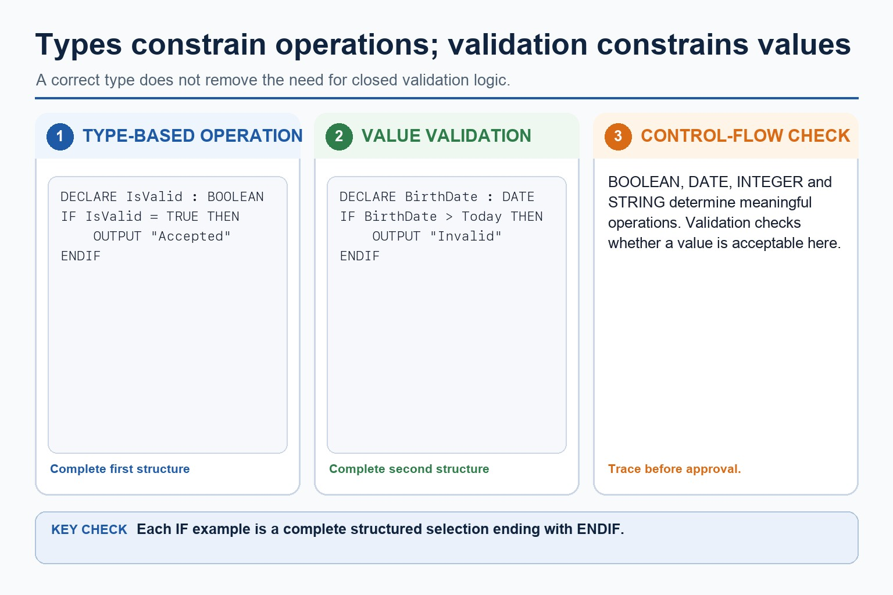
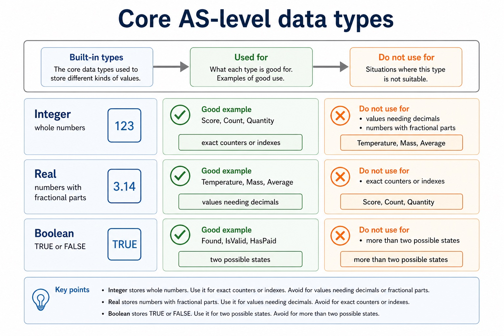
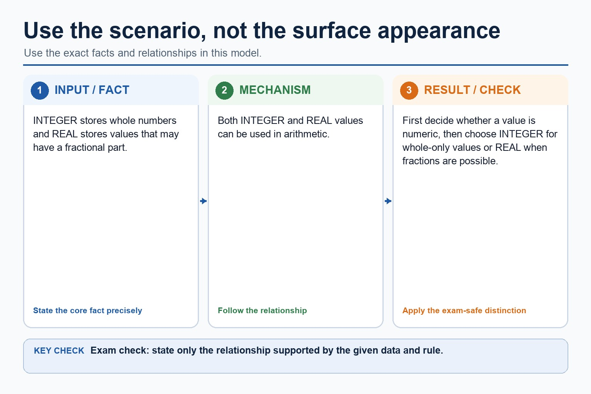
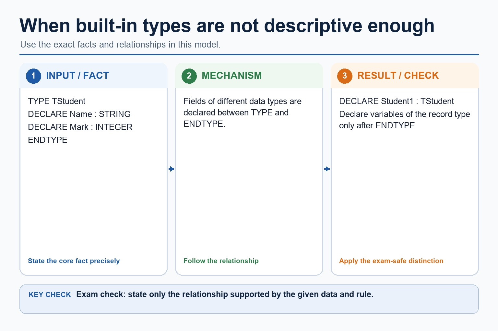
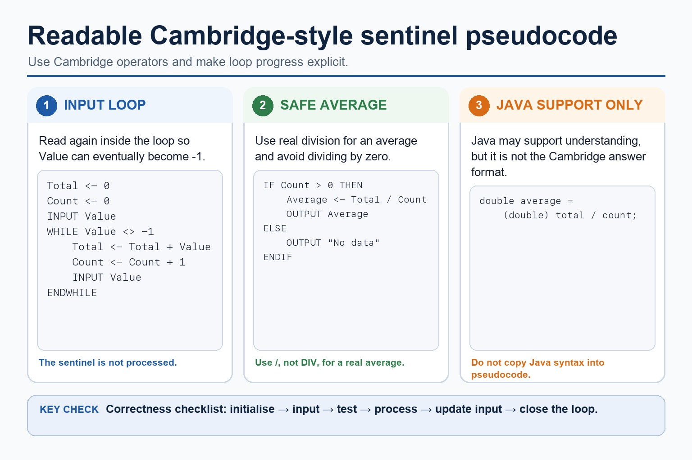

A value without a type is a suitcase without a label.
Data types tell a program what kind of value is stored, what operations are valid and how the value
should be interpreted. In Cambridge pseudocode, choosing the correct type is part of designing a clear
and reliable solution, not decoration for the variable name.
IdentifyINTEGER, REAL, BOOLEAN, CHAR, STRING, DATE and user-defined types
Choosesuitable types for values and scenarios with clear reasons
Declarevariables and simple user-defined types in Cambridge-style pseudocode
42INTEGER
42.5REAL
TRUEBOOLEAN
"Ali"STRING
Same storage idea, different rules. The type decides what the value means.
Why this matters
Paper 2 can ask for declarations, suitable data types, and reasons why a type is appropriate for a field.
Common trap
Do not store phone numbers or IDs as INTEGER just because they contain digits. If arithmetic is not needed, STRING is often safer.
Warm-up hook
Is "007" a number or a code?
A spy ID is stored as 007. Which type preserves the leading zero and avoids accidental arithmetic?
Choose the type that stores the characters exactly as entered.
Why data types exist
A type controls meaning and valid operations
Meaning
23 could be an age, a day of month, a count or part of an ID. The variable name and type make the intention explicit.
DECLARE Age : INTEGER
DECLARE StudentID : STRING
Operations
You can add two INTEGER values, compare DATE values, test a BOOLEAN, and join STRING values. The type narrows what is sensible.
IF IsValid = TRUE THEN
OUTPUT "Accepted"
ENDIF
Validation
Choosing a type does not replace validation. A DATE type stores a date; validation still checks whether a date is in an allowed range.
IF BirthDate > Today THEN
OUTPUT "Invalid"
ENDIF
A type controls meaning and valid operations

A type controls meaning and valid operations: source-grounded visual explanation.
Lesson fact: Why data types exist
Lesson fact: 23 could be an age, a day of month, a count or part of an ID. The variable name and type make the intention explicit.
Lesson fact: DECLARE Age : INTEGER
Lesson fact: DECLARE StudentID : STRING
Lesson fact: Operations
Lesson fact: You can add two INTEGER values, compare DATE values, test a BOOLEAN, and join STRING values. The type narrows what is sensible.
Lesson fact: IF IsValid = TRUE THEN
Lesson fact: OUTPUT "Accepted"
Lesson fact: Validation
Lesson fact: Choosing a type does not replace validation. A DATE type stores a date; validation still checks whether a date is in an allowed range.
Lesson fact: IF BirthDate > Today THEN
Lesson fact: OUTPUT "Invalid"
Built-in types
Core AS-level data types
Chinese support: 类型不是“长得像什么”，而是“需要怎样使用”。
Type
Stores
Good example
Do not use for
INTEGER
whole numbers
Score, Count, Quantity
values needing decimals
REAL
numbers with fractional parts
Temperature, Mass, Average
exact counters or indexes
BOOLEAN
TRUE or FALSE
Found, IsValid, HasPaid
more than two possible states
CHAR
one character
Grade, Initial, MenuChoice
names or full words
STRING
sequence of characters
Name, Postcode, PhoneNumber
values used for arithmetic
DATE
calendar date
BirthDate, BookingDate
date written as unvalidated free text
Core AS-level data types

Core AS-level data types: source-grounded visual explanation.
Lesson fact: Built-in types
Lesson fact: Good example
Lesson fact: Do not use for
Lesson fact: whole numbers
Lesson fact: Score, Count, Quantity
Lesson fact: values needing decimals
Lesson fact: numbers with fractional parts
Lesson fact: Temperature, Mass, Average
Lesson fact: exact counters or indexes
Lesson fact: TRUE or FALSE
Lesson fact: Found, IsValid, HasPaid
Lesson fact: more than two possible states
Choosing types
Use the scenario, not the surface appearance
Question
If yes
Type direction
Will arithmetic be performed?
yes
INTEGER or REAL
Can the value contain decimals?
yes
REAL
Is the answer only true/false?
yes
BOOLEAN
Is exactly one character stored?
yes
CHAR
Must leading zeros or letters be preserved?
yes
STRING
Is the value a calendar date?
yes
DATE
Exam wording tip: "suitable type" answers usually need both the type and a reason linked to the data.
Use the scenario, not the surface appearance

Use the scenario, not the surface appearance: source-grounded visual explanation.
Lesson fact: Choosing types
Lesson fact: Question
Lesson fact: Type direction
Lesson fact: Will arithmetic be performed?
Lesson fact: INTEGER or REAL
Lesson fact: Can the value contain decimals?
Lesson fact: Is the answer only true/false?
Lesson fact: Is exactly one character stored?
Lesson fact: Must leading zeros or letters be preserved?
Lesson fact: Is the value a calendar date?
Lesson fact: Exam wording tip: "suitable type" answers usually need both the type and a reason linked to the data.
User-defined types
When built-in types are not descriptive enough
Enumerated type
Use an enumerated type when a value must be one of a named set of options.
TYPE TDay = (Monday, Tuesday, Wednesday, Thursday, Friday)
DECLARE Day : TDay
Composite type preview
A record groups fields of different types. Records are developed later, but the idea starts with type choice.
TYPE TStudent
DECLARE Name : STRING
DECLARE DateOfBirth : DATE
DECLARE Enrolled : BOOLEAN
ENDTYPE
Boundary: this lesson introduces user-defined type choice. Arrays and records get their own full lessons later.
When built-in types are not descriptive enough

When built-in types are not descriptive enough: source-grounded visual explanation.
Lesson fact: User-defined types
Lesson fact: Enumerated type
Lesson fact: Use an enumerated type when a value must be one of a named set of options.
Lesson fact: TYPE TDay = (Monday, Tuesday, Wednesday, Thursday, Friday)
Lesson fact: DECLARE Day : TDay
Lesson fact: Composite type preview
Lesson fact: A record groups fields of different types. Records are developed later, but the idea starts with type choice.
Lesson fact: TYPE TStudent
Lesson fact: DECLARE Name : STRING
Lesson fact: DECLARE DateOfBirth : DATE
Lesson fact: DECLARE Enrolled : BOOLEAN
Lesson fact: Boundary: this lesson introduces user-defined type choice. Arrays and records get their own full lessons later.
Pseudocode vs Java
Same idea, different syntax
Cambridge-style declarations
DECLARE Count : INTEGER
DECLARE Average : REAL
DECLARE Found : BOOLEAN
DECLARE Initial : CHAR
DECLARE Name : STRING
DECLARE BirthDate : DATE
Paper 2 reminder: Java syntax supports understanding, but Cambridge-style pseudocode is the expected exam answer format.
Same idea, different syntax

Same idea, different syntax: source-grounded visual explanation.
Lesson fact: Pseudocode vs Java
Lesson fact: Cambridge-style declarations
Lesson fact: DECLARE Count : INTEGER
Lesson fact: DECLARE Average : REAL
Lesson fact: DECLARE Found : BOOLEAN
Lesson fact: DECLARE Initial : CHAR
Lesson fact: DECLARE Name : STRING
Lesson fact: DECLARE BirthDate : DATE
Lesson fact: Java support only
Lesson fact: int count;
Lesson fact: double average;
Lesson fact: boolean found;
Interactive type classifier
Choose a suitable data type
Choose a field to see the type and reason.
Interactive declaration builder
Build a Cambridge-style declaration
Choose a purpose to generate a declaration.
Worked examples
Type choices with exam-style reasoning
Practice with instant checking
Ten type decisions
Type the best data type or short answer. Use Show answer after trying.
Mistake debugging
Fix common type-selection errors
Exam-style questions
Original Cambridge-style data type questions with expandable MS
Mark schemes reward a suitable type plus a reason linked to the exact field.
Summary
Data type checklist
UseINTEGER for whole-number arithmetic and REAL for decimal values.
PreserveIDs, postcodes and phone numbers as STRING when arithmetic is not needed.
ModelBOOLEAN for two-state facts, CHAR for one character, DATE for calendar dates and user-defined types for named allowed values.
Homework
Clear consolidation tasks
Task 1: Type tableFor a library member system, choose types for MemberID, Name, DateJoined, HasOverdueBook, FineAmount and MembershipLevel. Give one reason for each.Task 2: DeclarationsWrite Cambridge-style DECLARE statements for the six fields in Task 1.Task 3: User-defined typeCreate one enumerated type for MembershipLevel with at least three named values, then declare a variable that uses it.